1968 Mercedes-Benz 250 SL California Hard Top
A rare and desirable 5-speed California model in factory original Silver Metallic (DB-180) over Bordeaux leather. Matching-numbers engine. Includes full datacard, extensive service records, and inspection reports. Removable hard top only, no soft top. Originally purchased in France, with one long-term owner (since 1995).


 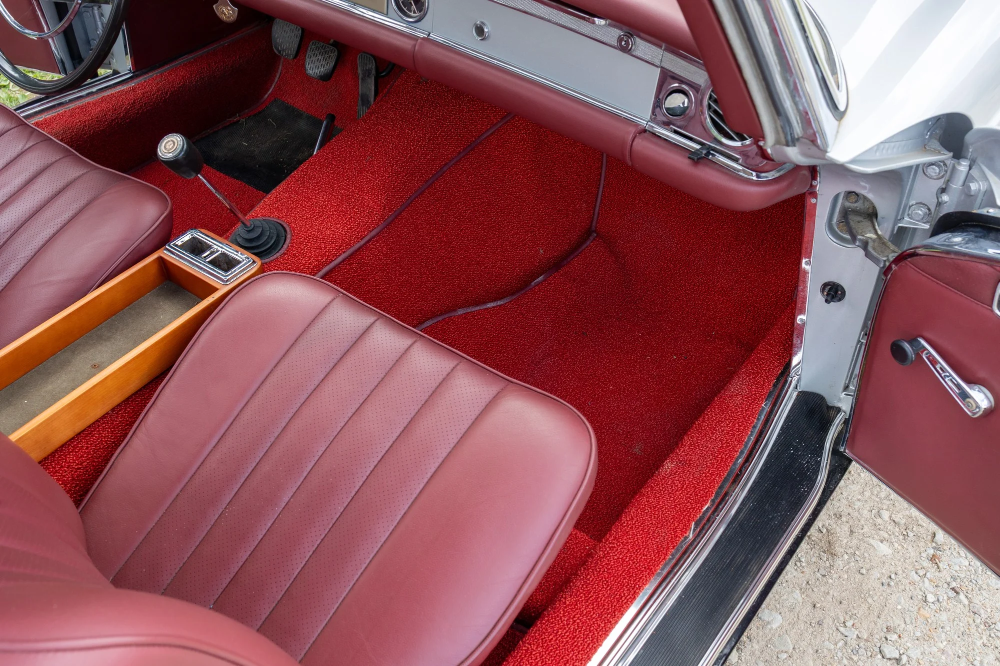
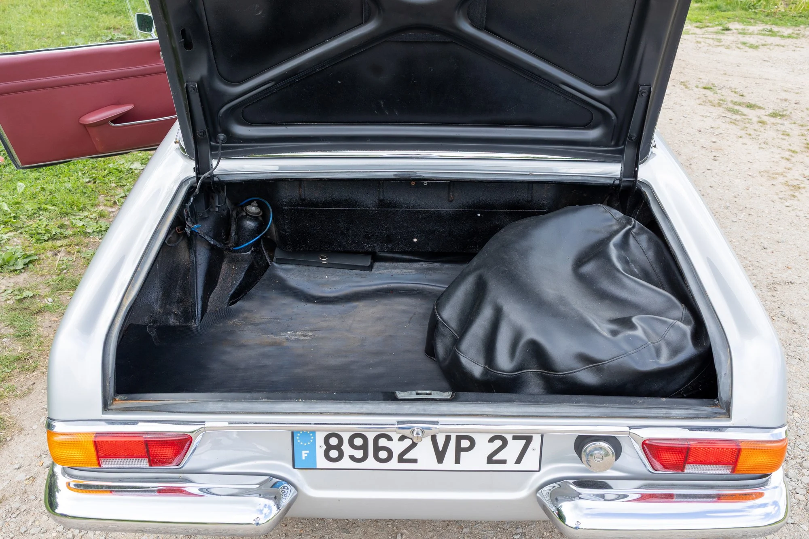
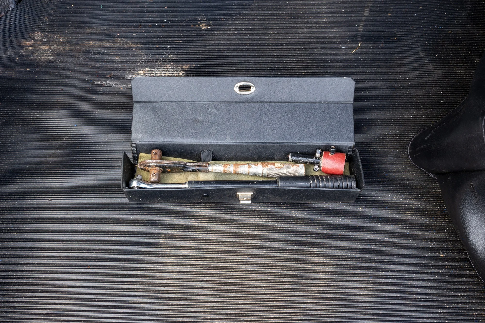
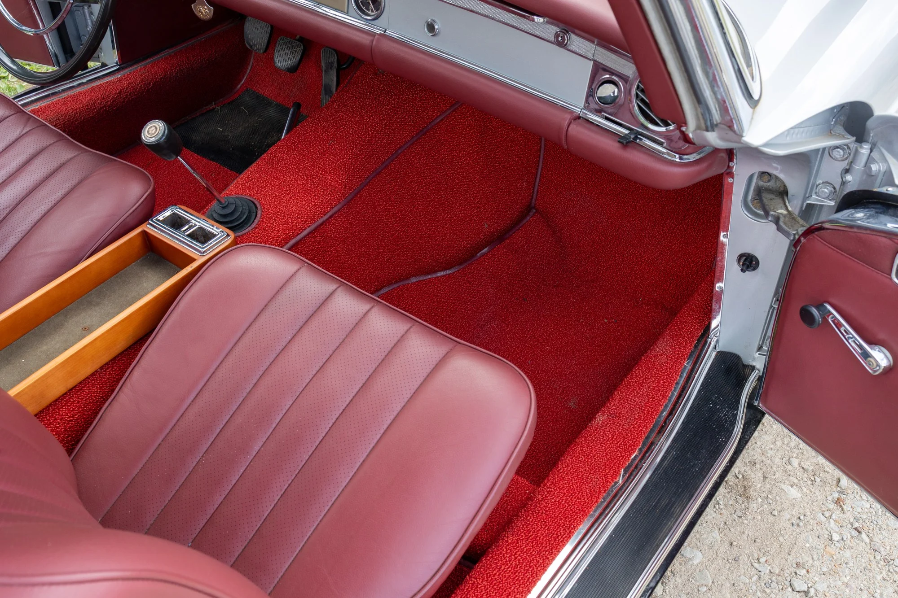
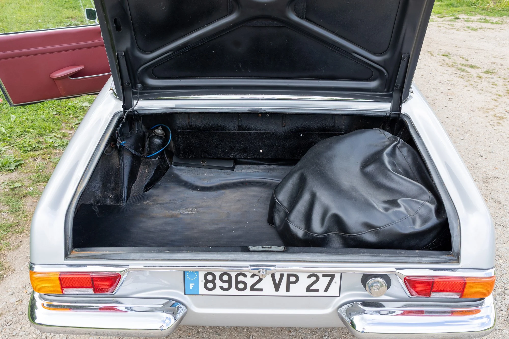
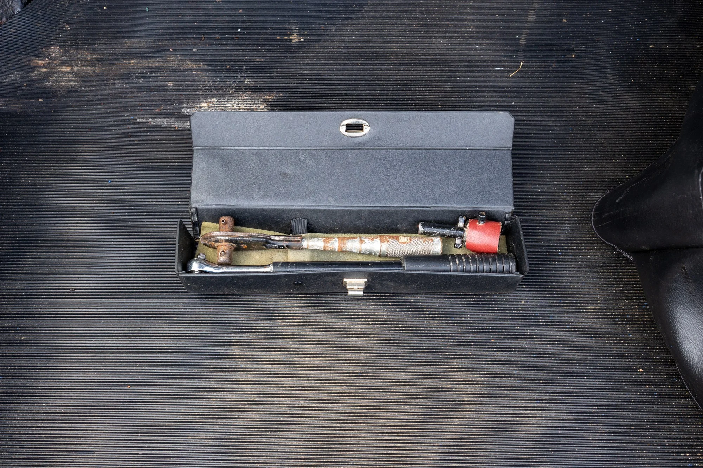
 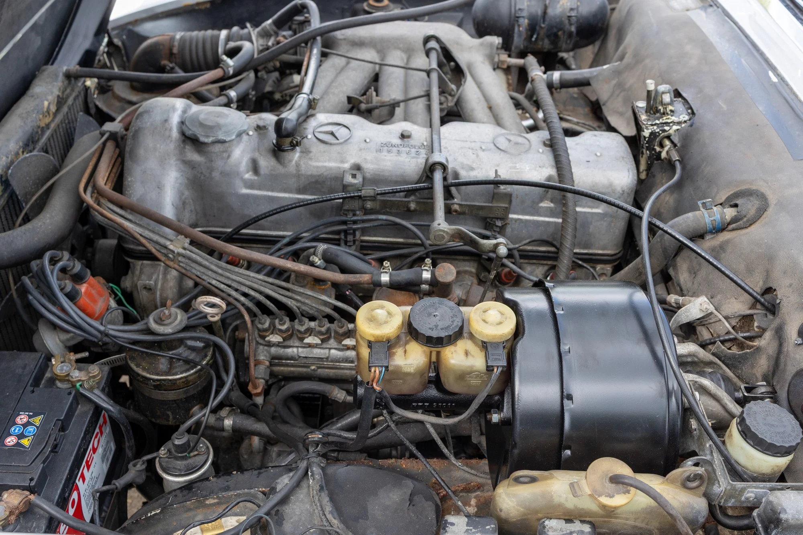
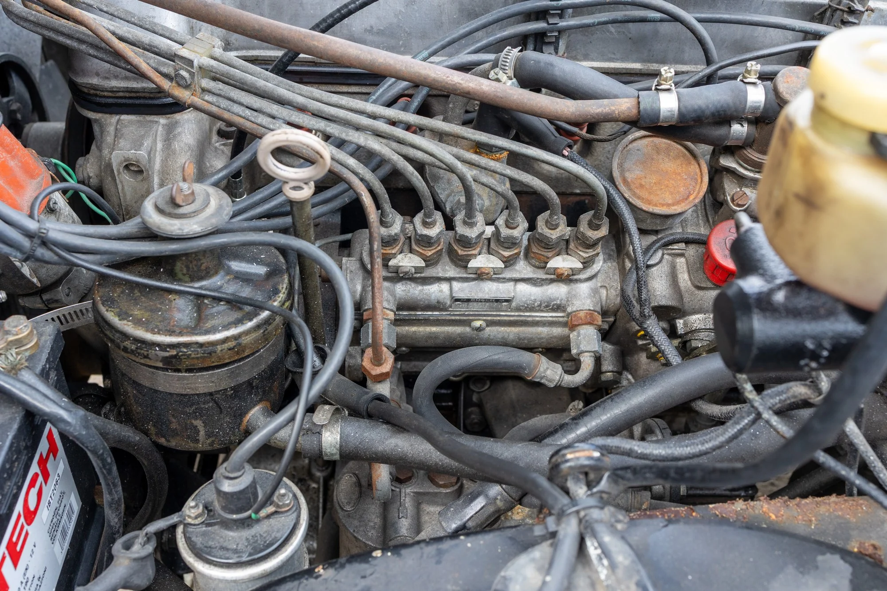
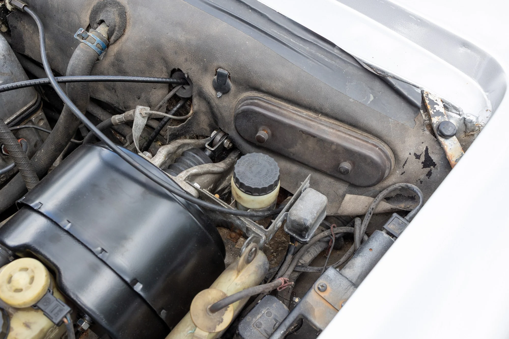
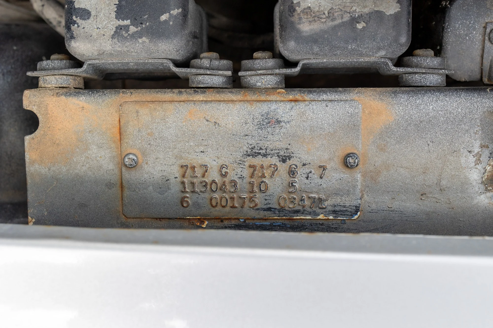
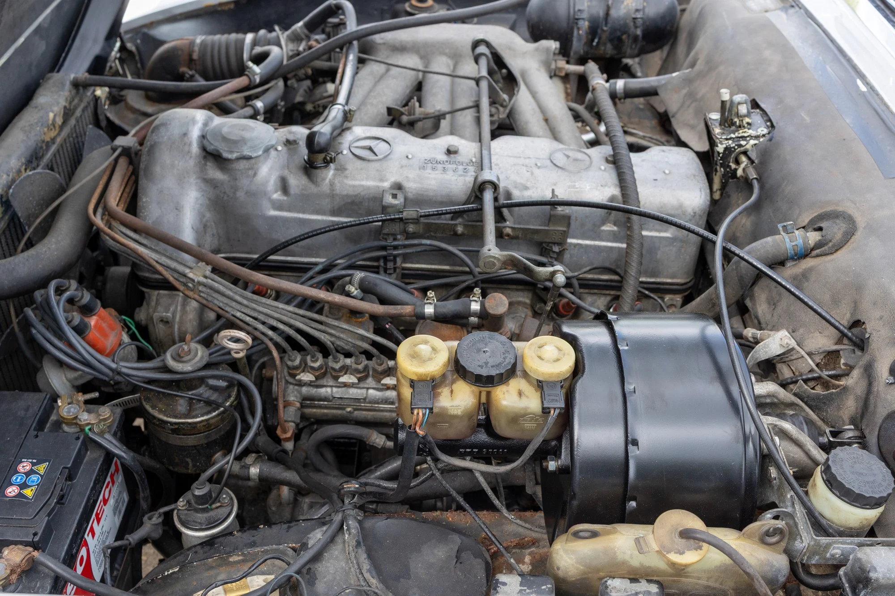
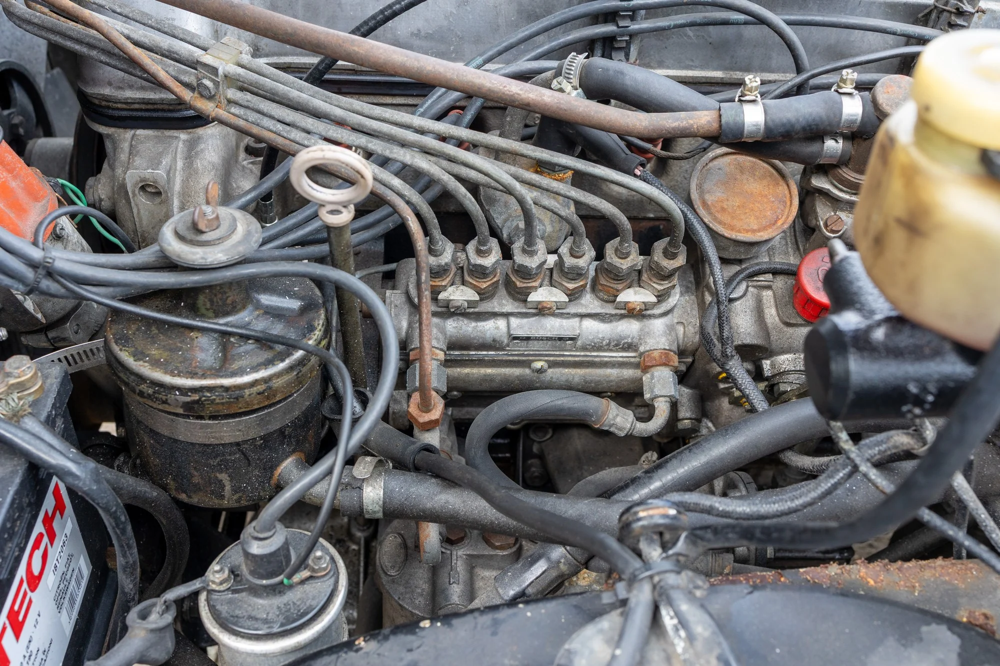
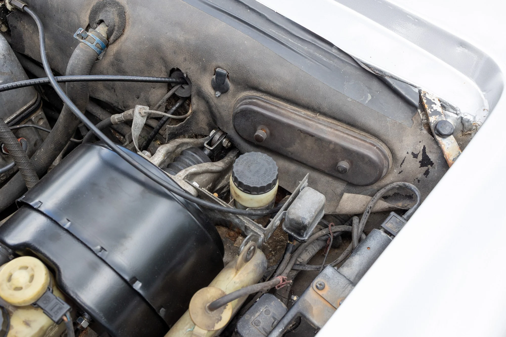
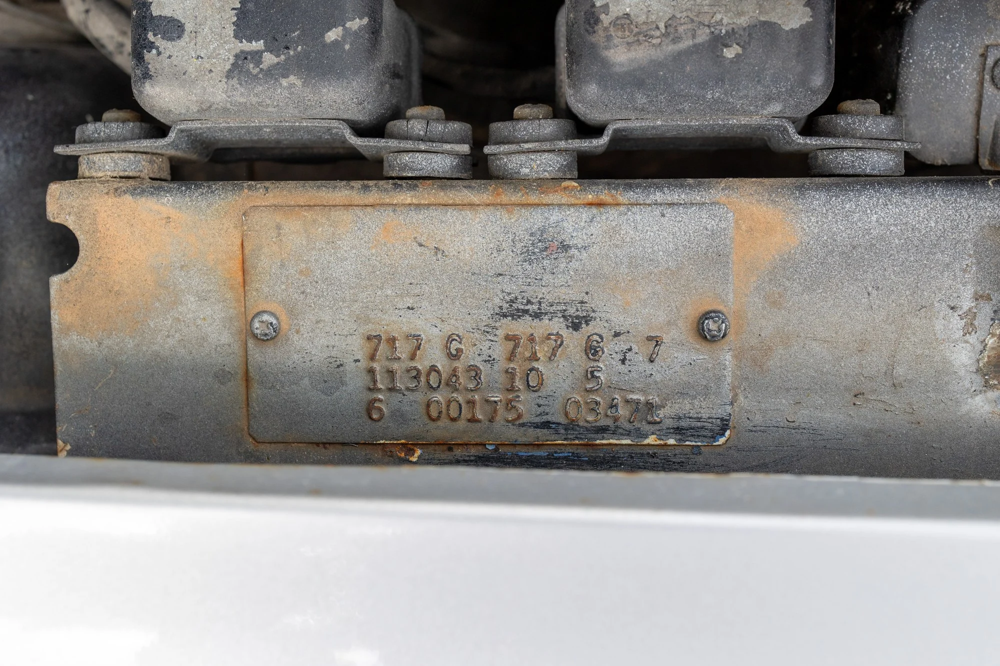